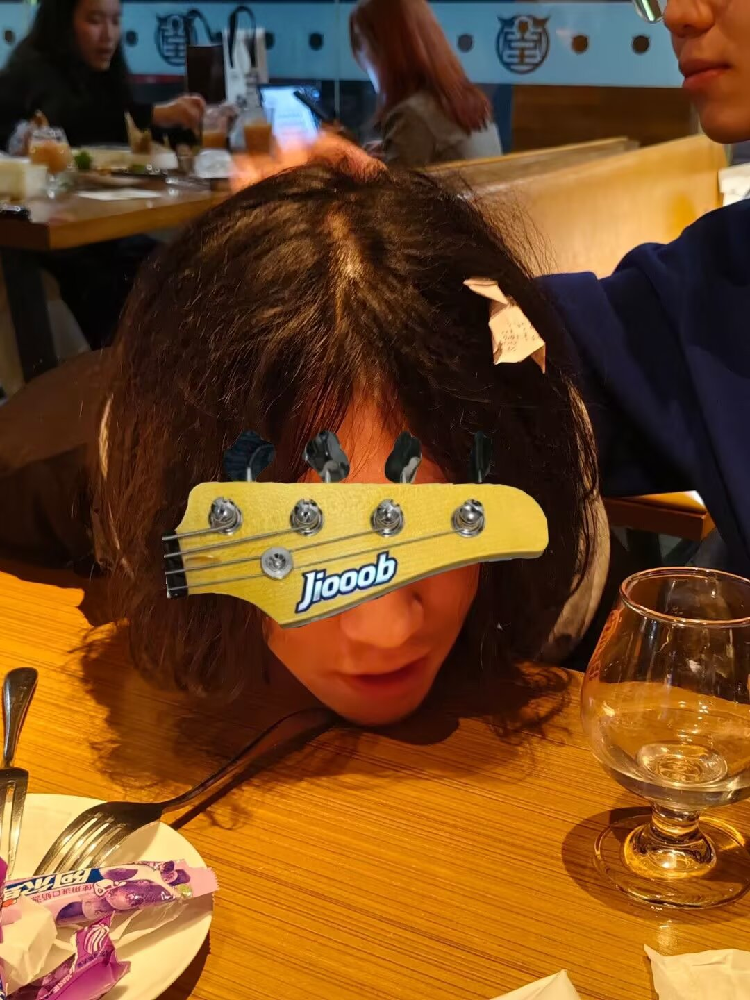
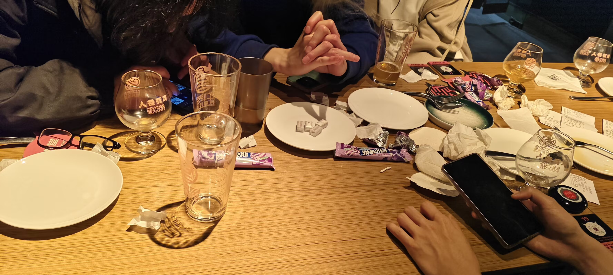

老大回来了
pu老师和wwy，对我影响很大。从进入终电见到的时候，就觉得很厉害，散发的气场和电波，在我这里吸引力达到了极致。个中原因，不一一在此列举，详见《称人”老大“的心理学分析》
周一的时候，pu老大突然说他周三到周五会在本部，于是先后在萨莉亚和牛啤堂开了两场。之前在群里老在说“如果pls回来了我可能会忍不住抱着他哭”。但真正见到的时候，真哭了的话会有些难为情，所以只是给他来了个拥抱
他说现在在中大读研和上班的日子比较乏味，日常work之后，打羽毛球和每日坚持练琴是为数不多的娱乐活动。唉，被事情塞满的日常里，确实不易找到更高质量的放松方式。认识的人是老登，接触的人是老登，一起上班的人也是老登...某种层面看，社会责任确实与社会化程度还有年龄成正比...
越发不想上班了，但是读研似乎也不太开心。我不禁思考大学的社会化教育的意义在什么地方。唉，tcz，以后究竟会变成什么样。。。人文关怀。。。你在哪里。。。
大酒
大家都到了后，各点各的，吃饱后，现在想起来，那时大概确实是喝醉了。我的酒量确实很差
第一杯 双倍帝都海盐古斯酸啤(Beijing Gose Modern Double)，6.5度，330ml
第二杯 宇宙浑浊双倍IPA(COSMIC THIIN GHAZY DOUBLE IPA)，8.2度，475ml
pu老师中途得走了，我最后抱了他，告别。之后就是胡话时间，脑子很沉，双脚发软，说了什么话现在已经忘了，但是大家似乎记得很清楚。
后面去厕所吐了一回，一直在说“对不起老大”，”Jiooob是三个o，不是一个也不是两个也不是四个，是三个o”，还有自己好想谈恋爱和自己的xp也说出来了，还有关于前任和抹茶哈基猫的事情。不过都不是很重要罢了
之后和q0还有wwy拜拜，被大小巨三位王送回了宿舍，路上一直反胃，运气好的是想起来要脱裤子，而且没有吐在床上
令人意外的是，第二天很早就醒了，头很晕，早晨六点五十，距离大物期中考试还有两小时40分钟
q0和清璇的空间动态记录了昨夜j一串字母的丑态
 好在是和家人般的朋友们在一起，试出了自己的酒量
live社
什么鬼，我竟然真的是live社中心组的一员了。今天开会，听老登们讨论摇滚夜的安排，emo专场大家要见一面，熟悉好办事，这倒是真的
估计很快又要忙起来
架子鼓
终于把宇宙便利店的8films拿下，可喜可贺可喜可贺。
曲子的节奏倒是不复杂，中间的叮叮镲镲帽以及底鼓四套三需要锻炼一下协调性之外，回过头看倒是没什么难的地方。
唉，还是得多练舒适圈之外的曲目，听节拍器连曲子，不能总是当dinner鼓手，cover和演出变成一坨屎的话，打算找个地缝钻进去自杀吧
现在是11月2日，周天排练的时候把底鼓鼓皮踩爆了，不过马哥说暂时不用赔钱，之后换了个备用的鼓皮